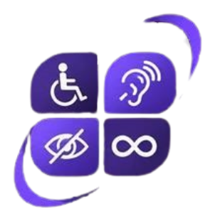

Encontre
Busque orientações sobre serviços e assuntos do seu dia a dia.
SOBRE O INCLUI
O INCLUI aproxima as pessoas de orientações e serviços públicos com linguagem simples, recursos acessíveis e caminhos claros para cada necessidade.
Entenda nossa propostaO DESAFIO QUE QUEREMOS ENFRENTAR
Informações públicas podem estar espalhadas, usar termos difíceis ou não considerar diferentes formas de comunicação. Isso torna mais complicado saber qual é o próximo passo.
O INCLUI propõe uma experiência digital que organiza orientações e ajuda cada pessoa a seguir seu caminho com mais segurança e independência.
COMO A PROPOSTA FUNCIONA
A tecnologia é o meio. O objetivo é facilitar o acesso das pessoas à informação.
Busque orientações sobre serviços e assuntos do seu dia a dia.
Acesse conteúdo organizado, com palavras claras e instruções objetivas.
Saiba quais passos pode tomar e onde buscar mais informações.

ACESSIBILIDADE FAZ PARTE DA PROPOSTA
A experiência considera recursos como áudio, Libras, contraste, ampliação e linguagem simples. As escolhas devem respeitar as necessidades e preferências de cada pessoa.
Conheça as opções de acessibilidadeINFORMAÇÃO QUE APROXIMA